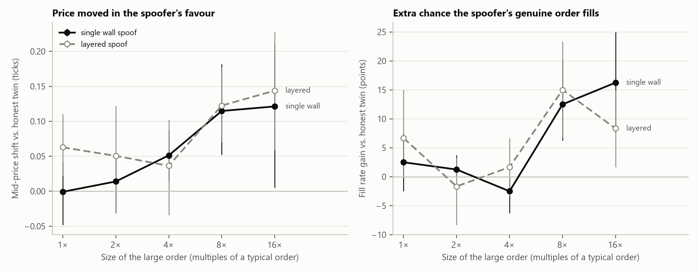
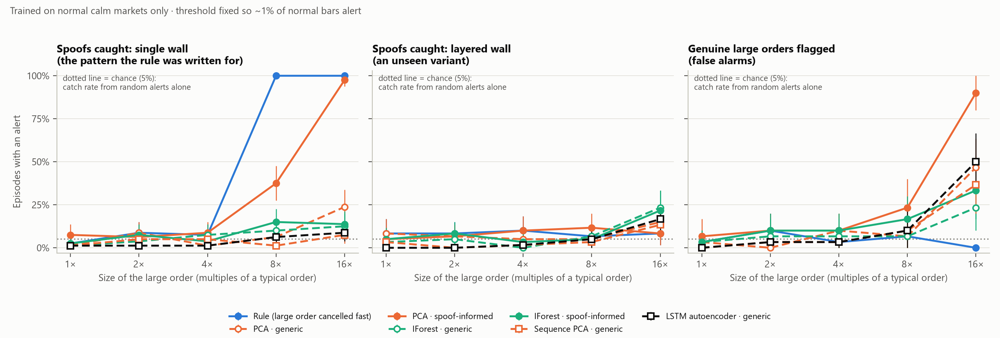
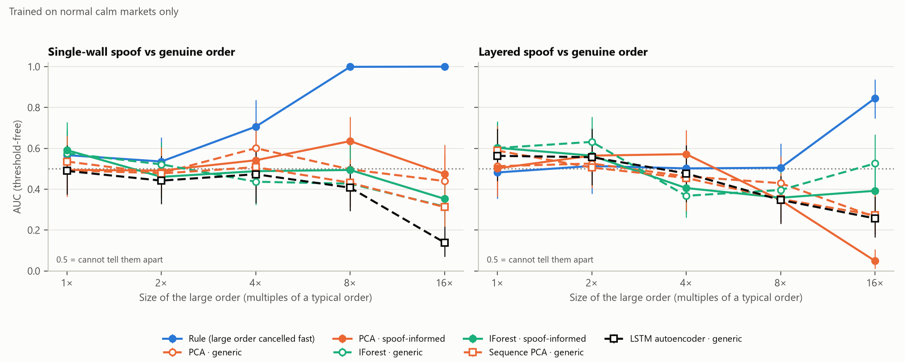
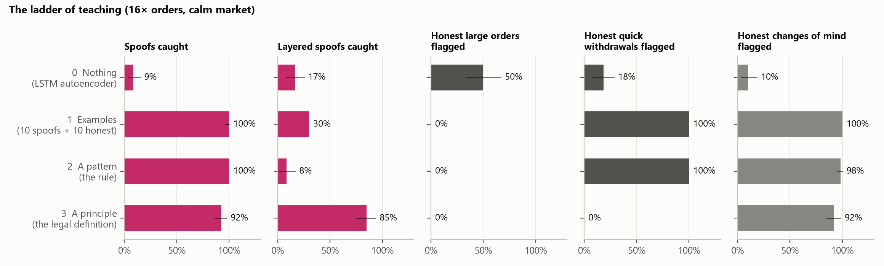
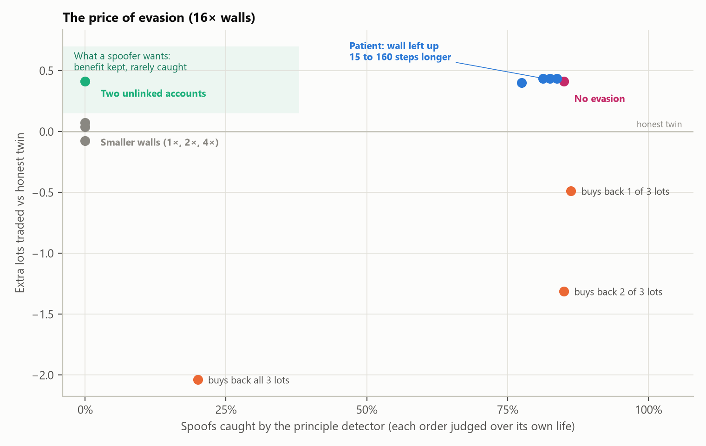
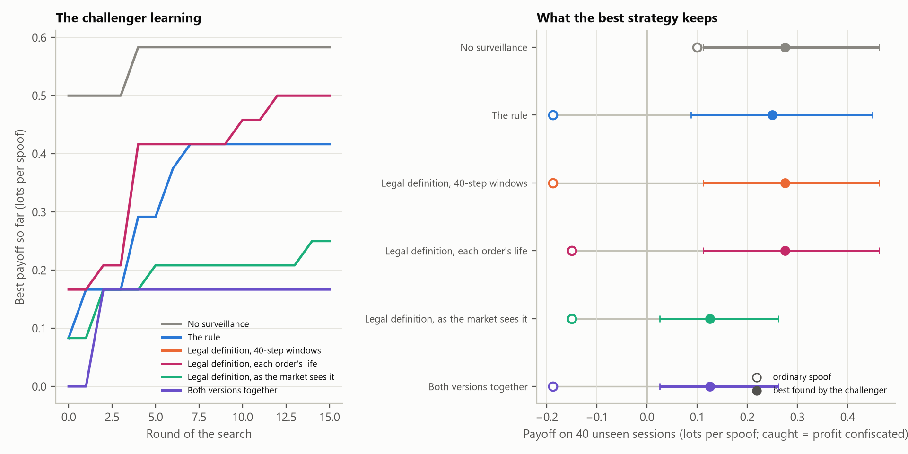
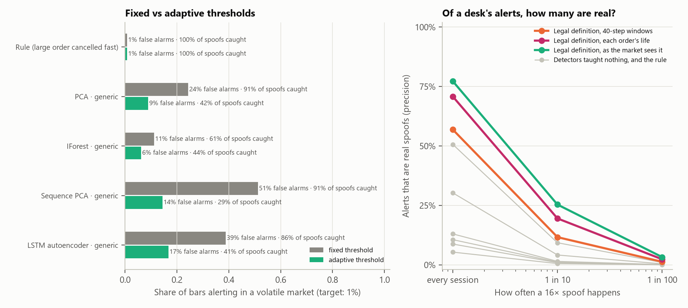

Detecting the Unseen
Can artificial intelligence detect hidden market manipulation without being taught what manipulation looks like?
Abstract
Spoofing means placing large orders one does not intend to trade, so that other traders misread supply and demand. Real examples are rare and hard to label, which makes one idea attractive: train a detector only on normal trading and let it flag whatever looks unusual. I tested that idea in an agent-based simulation of a limit order book in which spoofing measurably works (an 8× fake wall raised the chance of the spoofer's real order filling by +12 percentage points). Detectors that learned only normal trading (PCA, Isolation Forest, sequence PCA and an LSTM autoencoder) could not tell a spoof from an honest large order of the same size (AUC 0.14–0.44), and they raised false alarms on 11%–51% of normal bars when the market became volatile. A hand-written rule caught 100% of large spoofs but 8% once the same spoof was split into smaller orders. A second experiment gave detectors increasing amounts of prior knowledge. Labelled examples and the rule both learned what spoofs look like and missed the split version. A detector built only from the legal definition of the offence, which asks whether a trader showed interest on one side, withdrew it and traded the other way, caught 85% of split spoofs with no examples at all, flagged 0% of honest large orders, and kept its false alarms at 0.9% in a volatile market. A third experiment tried to dodge it: every dodge tested either gave up the spoofer's gain or needed two accounts the regulator could not link. In a fourth, a search program looked for dodges itself. After twice gaming my scoring, it found a real loophole: a large decoy order too far from the price for traders to see hid a spoof completely. Measuring the signal the way the market sees it closed that gap and stopped an honest market maker being flagged, leaving a spoofer at most 45% of its benefit, and only by spoofing below the alert threshold, a gap that combining detectors did not close. A fifth showed that thresholds which adapt to the market cut false alarms but do not help tell spoofs from honest orders, and that because spoofing is rare, most alerts from even the best detector are false. No detector could distinguish a spoof from an honest trader who changes their mind, because only the intention differs.
Answer: not by looking for the unusual; yes, by knowing the purpose, given who placed each order.
1. Introduction
Every exchange keeps a limit order book: the list of buy orders (bids) and sell orders (asks) waiting at each price. Traders read it to judge supply and demand, which is what a spoofer exploits. In Urra, Lopez Gonzalez & Sheth v FCA (Upper Tribunal, July 2025) three bond traders placed large orders a tick or two behind the best price, a small genuine order on the other side, and cancelled the large orders within seconds, often just after the small order traded [9].
Supervised machine learning needs many labelled examples of manipulation, which regulators rarely have. Unsupervised anomaly detection avoids labels: it learns normal behaviour and flags departures from it. Earlier work used generative and recurrent models trained on normal data [5, 7] and hidden Markov models with anomaly states [1]; Wang and Wellman built agent-based models in which spoofing is profitable [10, 11]; Fabre and Challet modelled how spoofable a book is [2]. The closest study is Poutré, Chételat and Morales [12], who trained a Transformer autoencoder on normal order-book data from five NASDAQ stocks, inserted synthetic quote stuffing, layering and pump-and-dump, and detected them "without requiring any prior knowledge of manipulation patterns". DeLise [13] found that adding a few labelled frauds to such a detector improves it greatly. Those studies compare manipulation with ordinary trading. This one adds the comparison a regulator most needs: honest orders that look the same. The question is narrower and, I think, more basic: is unusual the right target at all?
2. Research question and hypotheses
Question. Can a detector that is never shown an example of spoofing tell spoofing apart from honest trading?
H1 (stated before the experiments). Label-free detectors trained only on normal trading will catch synthetic spoofs more
reliably than a hand-written surveillance rule, especially on variants the rule was not written for.
H2. Detectors that read a sequence of time steps will do better than detectors that read one step at a time.
H3 (added after Part 1). A detector given the definition of the offence, but no examples, will separate spoofs from honest
large orders where unusualness-based detectors could not.
H4 (added after Part 2). A spoofer who knows about that detector cannot dodge it without giving up what the spoof was for.
H5 (added before Part 4). A search program that looks for dodges itself will find none that keeps the spoof's benefit.
H6 (added before Part 5). Thresholds that adapt to current market conditions will cut false alarms in a volatile market without
losing spoofs, but will not help tell spoofs from honest orders of the same size.
Because "catching" is meaningless without false alarms, every detector is also tested on honest large orders, on a volatile but honest market, and in Part 2 on honest traders who cancel quickly or change their mind.
3. Method
3.1 A market where spoofing can work
The simulator (written for this project, src/orderbook.py, src/market.py) is a price-time-priority limit order
book with four kinds of normal trader: zero-intelligence traders who trade around a noisy estimate of value; book-reading traders who
lean towards buying when bids outweigh asks (after Wang and Wellman's book-reading agents [10]); two market makers who quote both sides
and cancel and replace every five steps, so quick cancellations are normal; and an institution that occasionally rests a genuinely large
order. A calm and a volatile regime differ in how noisy and jumpy the underlying value is. In total 2,262 sessions of 2,000
steps were simulated for Part 1, each with its own random seed; training, threshold-setting and test sessions never share a seed.
3.2 Spoofing and honest episodes
Spoof: a large wall one or two ticks behind the best price and a small genuine order (3 lots) at the best price on the other side; the wall is cancelled when the small order trades or after 30 steps. Layered spoof: the same total size split over four price levels. Honest twin: the same session and seed with the small order but no wall, to measure what the wall achieves. Honest large order: a genuine order of the same size and placement left on the book for 150–400 steps. Part 2 adds quick withdrawal (an honest large order cancelled after 5–25 steps, nothing traded) and change of mind (the same, followed by a small trade the other way). Wall sizes are 1, 2, 4, 8 and 16 times a typical order.
3.3 Detectors
The market is summarised every five steps (a "bar") by 18 generic features (depth at five price levels, spread, price change, and counts and volumes of orders, cancellations and trades), and optionally six "spoof-informed" features chosen because I knew what spoofing looks like. Detectors: the rule (the largest order cancelled within 50 steps; its alert threshold, set on normal data, is 17 lots); PCA (reconstruction error, a linear autoencoder); Isolation Forest [6], written from scratch; and two sequence models that read eight bars, sequence PCA and an LSTM autoencoder [3, 7]. All are fitted on normal calm sessions only.
3.4 Scoring
Each detector's alert threshold is the 99th percentile of its scores on separate normal sessions (about 1% of normal bars alert), fixed before any spoofing data is seen. An episode is caught if any bar in its eight-bar window alerts. The chance level is how often a random window of normal trading contains an alert anyway (6%). Threshold-free separation is measured with AUC. Intervals are 95% bootstrap intervals over episodes, and detectors are compared on the same episodes with a paired bootstrap.
3.5 Part 2: account-level detectors
Part 2 records which account placed each order, as regulators can: trading venues must keep order records that identify the client [8]. Account numbers come from a separate random stream, so the market is identical event for event (this is tested). For each account and each 40-step window the simulator counts lots added, cancelled and traded on each side. The principle detector turns the legal definition of manipulation (Market Abuse Regulation, Article 12: orders giving false or misleading signals about supply or demand [4]) into three clauses: the account showed interest on one side (submitted more there than on the other), withdrew it rather than trading it (cancelled more on that side), and traded the other way on balance. Its score is the size of that false signal in lots; it is never trained, and its threshold is set so that 1% of normal 40-step windows contain an alert (10 lots). Its control is an untaught Isolation Forest given exactly the same account data. The examples rung is a logistic regression on four order features (size, lifetime, fraction traded, distance from the best price) shown k labelled spoof walls, and in a second version k labelled honest large orders too, tested on held-out sessions.
4. Results
4.1 Spoofing works in this market
An 8× wall raised the chance that the spoofer's genuine order filled by +12 points (+6 to +20) compared with its honest twin, and a 16× wall by +16; layering worked too (+15 points at 8×). Prices moved about +0.11 ticks in the spoofer's favour at 8× (Table 1). Missing these spoofs therefore matters.
| Spoof | Size | Fill chance, with wall | Fill chance, honest twin | Extra fill chance (95% CI) | Price shift, ticks |
|---|---|---|---|---|---|
| single wall | 1× | 74% | 71% | +2 pts (-2 to +8) | -0.00 |
| single wall | 2× | 70% | 69% | +1 pts (+0 to +4) | +0.01 |
| single wall | 4× | 69% | 71% | -2 pts (-6 to +0) | +0.05 |
| single wall | 8× | 81% | 69% | +12 pts (+6 to +20) | +0.11 |
| single wall | 16× | 90% | 74% | +16 pts (+8 to +25) | +0.12 |
| layered | 1× | 68% | 62% | +7 pts (+0 to +15) | +0.06 |
| layered | 2× | 57% | 58% | -2 pts (-8 to +3) | +0.05 |
| layered | 4× | 77% | 75% | +2 pts (-3 to +7) | +0.04 |
| layered | 8× | 85% | 70% | +15 pts (+7 to +23) | +0.12 |
| layered | 16× | 85% | 77% | +8 pts (+2 to +15) | +0.14 |

4.2 Label-free detectors barely beat chance; the rule catches only its own pattern
The untaught detectors caught few spoofs: the Isolation Forest 12% and the LSTM autoencoder 9% of even the largest, against a chance level of 6%. Adding spoof-informed features let PCA catch 98%, but it also flagged 90% of honest large orders: it had learned "big order", not "manipulation". The rule caught 100% and 100% of single-wall spoofs at 8× and 16×, because its threshold sits between the 4× and 8× sizes; split into four smaller orders, the same spoof fell under it and the rule caught 8% (Table 2). H1 is not supported.
| Detector | Spoofs 4× | Spoofs 8× | Spoofs 16× | Layered 16× | Honest large 8× | Honest large 16× |
|---|---|---|---|---|---|---|
| Rule | 8% | 100% | 100% | 8% | 7% | 0% |
| PCA | 1% | 6% | 24% | 15% | 7% | 47% |
| PCA, spoof-informed | 9% | 38% | 98% | 8% | 23% | 90% |
| Isolation Forest | 8% | 10% | 12% | 23% | 7% | 23% |
| Isolation Forest, spoof-informed | 4% | 15% | 14% | 22% | 17% | 33% |
| Sequence PCA | 5% | 1% | 8% | 13% | 10% | 37% |
| LSTM autoencoder | 1% | 6% | 9% | 17% | 10% | 50% |

4.3 They cannot tell a spoof from an honest order of the same size
Spoofs are somewhat unusual compared with ordinary trading, but against honest large orders of the same size every untaught detector scored an AUC between 0.14 and 0.44; the LSTM autoencoder scored 0.14 (0.07 to 0.22), meaning it found the honest orders more unusual (Table 3). A shuffle test, which scrambles the order of bars inside each window, left the sequence models' AUCs almost unchanged, so they were not using the order of events. Recomputing features every single step did not help (LSTM AUC 0.52 against normal trading, 0.19 against honest orders). H2 is not supported.
| Detector | Spoof vs normal, 16× | Spoof vs honest, 8× | Spoof vs honest, 16× | Layered vs honest, 16× |
|---|---|---|---|---|
| Rule | 1.00 | 1.00 | 1.00 (1.00 to 1.00) | 0.85 |
| PCA | 0.85 | 0.50 | 0.44 (0.32 to 0.57) | 0.26 |
| PCA, spoof-informed | 0.99 | 0.64 | 0.47 (0.35 to 0.62) | 0.05 |
| Isolation Forest | 0.65 | 0.43 | 0.32 (0.21 to 0.43) | 0.53 |
| Isolation Forest, spoof-informed | 0.74 | 0.49 | 0.35 (0.24 to 0.47) | 0.39 |
| Sequence PCA | 0.74 | 0.43 | 0.31 (0.21 to 0.42) | 0.27 |
| LSTM autoencoder | 0.71 | 0.41 | 0.14 (0.07 to 0.22) | 0.26 |

4.4 Legitimate volatility produces false accusations
When the market became volatile but stayed honest, detectors trained on calm trading flagged 11%–51% of normal bars instead of 1%, while the rule stayed at 0.8%. Training on calm and volatile trading brought false alarms back to 1.5%–2.1% (Table 4). An anomaly detector is only as good as its picture of "normal", and an honest market changes.
| Detector | Calm → calm | Calm → volatile | Mixed → volatile | Spoofs 16×, volatile (calm-trained) |
|---|---|---|---|---|
| Rule | 0.7% | 0.8% | 0.8% | 100% |
| PCA | 0.9% | 24.1% | 1.8% | 91% |
| PCA, spoof-informed | 1.1% | 15.7% | 1.5% | 100% |
| Isolation Forest | 1.0% | 11.0% | 2.0% | 61% |
| Isolation Forest, spoof-informed | 1.2% | 12.7% | 2.0% | 79% |
| Sequence PCA | 0.4% | 50.9% | 1.5% | 91% |
| LSTM autoencoder | 1.0% | 40.1% | 2.1% | 86% |
4.5 Detection delay
Among caught spoofs, the rule's first alert came on average about 7 steps after the wall appeared (Table 5), when the wall was cancelled, so after the spoof had already worked. All detectors here, including Part 2's, are after-the-fact surveillance rather than live prevention; an alert is a reason to look closer, not a trade stopped.
| Detector | Spoofs 8× | Spoofs 16× | Layered 16× | Spoofs 16×, volatile |
|---|---|---|---|---|
| Rule | 7.8 | 7.0 | 15.0 | 4.6 |
| PCA, spoof-informed | 6.0 | 2.0 | 5.0 | 0.9 |
4.6 Order by order, and in other markets
An Isolation Forest trained on every individual order (size, lifetime, fraction traded, distance) found spoof walls unusual against ordinary orders (AUC 0.97) but ranked every honest large order above every spoof (AUC 0.00); without size, spoofs stopped standing out at all (0.56). A spoof is unusual only in its size, and its quick cancellation looks like market-making. Repeating the core experiment in four other markets (Table 9), one claim failed: untaught PCA caught more spoofs in some markets, but it flagged honest orders just as often, so the central finding, that untaught detectors cannot tell the two apart, held in every market.
| Claim | Main | Fewer book-readers | More book-readers | Thinner book | Impatient traders |
|---|---|---|---|---|---|
| Untaught detectors catch at most 30% of 16× single-wall spoofs | holds | fails | fails | fails | fails |
| (added after seeing the results) Untaught detectors flag honest 16× orders at least as often as they catch 16× spoofs | holds | holds | holds | holds | holds |
| The rule catches at least 90% of 8× and 16× single-wall spoofs | holds | holds | holds | holds | holds |
| Layering drops the rule to at most 30% at 16× | holds | holds | holds | holds | holds |
| No untaught detector tells spoofs from genuine orders (AUC at most 0.6) | holds | holds | holds | holds | holds |
| PCA with spoof-informed features flags at least 50% of genuine 16× orders | holds | holds | holds | holds | holds |
| The 16× wall measurably helps the genuine order fill (CI above zero) | holds | fails | holds | holds | holds |
4.7 Part 2: what kind of teaching works
Shown only labelled spoofs, the classifier learned "large order": it caught every wall, but flagged 100% of honest large orders and caught 0% of layered spoofs. Shown honest large orders as well, it learned "large and short-lived": it stopped flagging honest orders, but caught 30% of layered spoofs at 16× and 0% at 8×, and flagged 100% of honest quick withdrawals, as did the rule (100%). More examples (up to 40) changed nothing.
The principle detector caught 81% and 92% of single-wall spoofs at 8× and 16×, and 85% and 85% of layered spoofs, because splitting a wall does not change what the trader showed, withdrew and traded. On the same layered episodes it beat the rule by +77 points at 16× (p < 0.001). Almost every spoof it missed never paid off (its small order never traded); of the spoofs that did, it caught 98% at 8× and 100% at 16×. It flagged 0% of honest large orders and 0% of honest quick withdrawals, and its false alarms barely moved in a volatile market (0.7% to 0.9% of windows). The untaught Isolation Forest on the same account data caught 0%: it ranked spoofers as stranger than honest large traders (AUC 1.00) but some honest trader was always stranger still (AUC 0.00 against ordinary trading). The success comes from the principle, not the data. H3 is supported, with the limits below.
| Teaching | Spoofs caught | Layered caught | Honest large flagged | Quick withdrawals flagged | Changes of mind flagged |
|---|---|---|---|---|---|
| 0. Nothing (LSTM autoencoder) | 9% | 17% | 50% | 18% | 10% |
| 1. Examples (10 spoofs + 10 honest orders) | 100% | 30% | 0% | 100% | 100% |
| 2. A pattern (the rule) | 100% | 8% | 0% | 100% | 98% |
| 3. A principle (the legal definition) | 92% | 85% | 0% | 0% | 92% |
| Control: untaught model on account data | 0% | 0% | 0% | 0% | 0% |
| Teaching | Spoofs caught | Layered caught | Honest large flagged | Quick withdrawals flagged | Changes of mind flagged |
|---|---|---|---|---|---|
| 0. Nothing (LSTM autoencoder) | 6% | 5% | 10% | 8% | 8% |
| 1. Examples (10 spoofs + 10 honest orders) | 73% | 0% | 0% | 29% | 17% |
| 2. A pattern (the rule) | 100% | 7% | 7% | 93% | 93% |
| 3. A principle (the legal definition) | 81% | 85% | 0% | 0% | 88% |
| Control: untaught model on account data | 0% | 0% | 0% | 0% | 0% |

4.8 The case no detector solved, and attempts to break the principle
An honest trader who changes their mind performs exactly the actions of a spoofer. The principle flagged 92% of these (AUC 0.50 against spoofs: no separation) and the rule 98%. The principle held in all four alternative markets (80%–96% of spoofs and 85%–90% of layered spoofs at 16×) and however many traders shared an account. Its weaknesses are accounts: inside a broker account carrying 20% of all orders it caught 42% at 8× and 66% at 16×, and a spoofer who shows the wall from one account and trades from another escaped completely (0%) unless the accounts were linked to their owner (80%). Checking every pair of accounts without links caught 100%, but also flagged 100% of honest quick withdrawals (Table 8).
| Setting | Spoofs 8× | Spoofs 16× | Layered 16× | Honest large 16× | Quick withdrawals 16× | False-alarm windows |
|---|---|---|---|---|---|---|
| Main market | 81% | 92% | 85% | 0% | 0% | 0.7% |
| Market: fewer book-readers | 78% | 80% | 90% | 0% | 0% | 0.4% |
| Market: more book-readers | 86% | 96% | 90% | 0% | 0% | 2.1% |
| Market: thinner book | 76% | 90% | 85% | 0% | 0% | 1.3% |
| Market: impatient traders | 80% | 88% | 88% | 0% | 0% | 0.2% |
| 10 accounts per trader type | 84% | 92% | 85% | 0% | 0% | 0.8% |
| 25 accounts per trader type | 84% | 92% | 85% | 0% | 0% | 1.8% |
| 50 accounts per trader type | 84% | 92% | 85% | 0% | 0% | 1.1% |
| 200 accounts per trader type | 84% | 92% | 85% | 0% | 0% | 0.6% |
| 800 accounts per trader type | 84% | 92% | 85% | 0% | 0% | 0.3% |
| Spoofer inside an omnibus account carrying 1% of all orders | 82% | 94% | 80% | 0% | 0% | 0.6% |
| Spoofer inside an omnibus account carrying 5% of all orders | 74% | 92% | 80% | 0% | 0% | 1.4% |
| Spoofer inside an omnibus account carrying 20% of all orders | 42% | 66% | 72% | 0% | 0% | 1.0% |
| 20-step windows | 76% | 82% | 70% | 0% | 0% | 0.5% |
| 80-step windows | 84% | 92% | 85% | 0% | 0% | 1.2% |
| 160-step windows | 86% | 92% | 85% | 0% | 0% | 1.8% |
| Attack: checked one account at a time | 0% | 0% | 0% | 0% | 0% | 1.0% |
| Attack: regulator links accounts to their owner | 88% | 80% | 88% | 0% | 0% | 1.0% |
| Attack: every pair of accounts checked, no links | 98% | 100% | 100% | 4% | 100% | 0.4% |
4.9 Part 3: the price of evasion
A detector is only useful if a spoofer cannot simply step around it, so the spoofer was given the obvious dodges. Patience, leaving the wall up after the genuine order traded, beat the 40-step windows of Part 2 at almost no cost (16× catch rate 92% → 29% with a 40-step wait), and longer windows only help until the spoofer waits longer still (51% with 160-step windows against a 160-step wait). Judging every withdrawn order over its own life instead, from the step it was placed to the step it was withdrawn, closed the gap: 78% of the most patient spoofers were caught (against 85% with no dodge). On honest trading this version kept false alarms at 0.7% of windows (1.3% when volatile) and flagged 0% of honest large orders, 0% of honest quick withdrawals and, as expected, 92% of honest changes of mind. Buying back what was sold made no difference until the spoofer bought back all of it (86% caught after buying back one lot); buying back everything escaped (20% caught) but left the spoofer 2.0 lots worse off than its honest twin, having paid about 0.8 ticks per lot. Combined with Part 1 (walls below 8× do not help the spoofer) and Part 2 (two accounts escape unless linked to their owner), every dodge tried either throws away the benefit or depends on accounts the regulator cannot link. H4 is supported for the dodges tested, which are not every possible strategy.
| Dodge | Size | Extra lots vs honest twin (95% CI) | Caught: 40-step windows | Caught: 160-step windows | Caught: order life | Caught: rule | Buy-back cost, ticks/lot |
|---|---|---|---|---|---|---|---|
| no evasion | 8× | +0.38 (+0.19 to +0.59) | 81% | 81% | 71% | 100% | |
| patient: 15 steps | 8× | +0.38 (+0.19 to +0.59) | 76% | 79% | 68% | 99% | |
| patient: 40 steps | 8× | +0.35 (+0.16 to +0.56) | 29% | 78% | 66% | 95% | |
| patient: 80 steps | 8× | +0.38 (+0.19 to +0.59) | 30% | 78% | 66% | 64% | |
| patient: 160 steps | 8× | +0.38 (+0.19 to +0.59) | 30% | 50% | 66% | 62% | |
| buys back 1 of 3 lots | 8× | -0.46 (-0.66 to -0.24) | 79% | 79% | 70% | 100% | +0.66 |
| buys back 2 of 3 lots | 8× | -1.16 (-1.40 to -0.90) | 79% | 79% | 70% | 100% | +0.66 |
| buys back all 3 lots | 8× | -1.79 (-2.11 to -1.44) | 18% | 19% | 15% | 100% | +0.66 |
| no evasion | 16× | +0.41 (+0.17 to +0.66) | 92% | 92% | 85% | 100% | |
| patient: 15 steps | 16× | +0.44 (+0.21 to +0.68) | 91% | 92% | 84% | 100% | |
| patient: 40 steps | 16× | +0.44 (+0.21 to +0.68) | 29% | 90% | 81% | 91% | |
| patient: 80 steps | 16× | +0.44 (+0.21 to +0.68) | 30% | 90% | 82% | 52% | |
| patient: 160 steps | 16× | +0.40 (+0.15 to +0.65) | 26% | 51% | 78% | 59% | |
| buys back 1 of 3 lots | 16× | -0.49 (-0.72 to -0.25) | 92% | 92% | 86% | 100% | +0.83 |
| buys back 2 of 3 lots | 16× | -1.31 (-1.55 to -1.06) | 92% | 92% | 85% | 100% | +0.81 |
| buys back all 3 lots | 16× | -2.04 (-2.31 to -1.75) | 24% | 24% | 20% | 100% | +0.82 |
| Order-life principle on honest trading | Value |
|---|---|
| false alarms, normal calm market (share of 40-step windows) | 0.7% |
| false alarms, normal volatile market (share of 40-step windows) | 1.3% |
| honest large orders flagged, 16x | 0.0% |
| honest quick withdrawals flagged, 16x | 0.0% |
| honest changes of mind flagged, 16x | 91.7% |

4.10 Part 4: an AI challenger
Part 3 tested dodges I thought of. To test dodges I had not, I wrote a challenger: a genetic search over seven settings a trader controls (wall size, distance from the best price, number of layers, how long the wall stays up after the trade, how much is bought back, and the size and distance of a decoy order on the other side). It starts from 32 random strategies, keeps the best 8, mutates and mixes them, and repeats for 15 rounds, learning only from one detector's alerts at a time. Its score is what a spoofer wants: lots of its genuine order that traded, minus anything bought back or any of its wall that traded, beyond an honest twin with only the genuine order; a caught spoof has its profit confiscated. Four searches (no surveillance, the rule, and two versions of the legal definition) used 12 practice sessions; every strategy ever tried was then scored against every detector and the five best re-tested on 40 unseen sessions.
The challenger gamed the scoring before the detector. When every lot the account sold counted, it added a real order near the price and simply sold more. When the twin ran the same strategy without the wall, it added a decoy that hurt the twin, so the wall only undid self-inflicted harm. Each version found a hole in how success was measured, not in the detector; the score above is the third.
Then it found a real loophole. The legal definition as written in Part 2 counts interest on balance, which is what lets it ignore market makers. A large decoy on the other side, far from the price, cancels the wall out of those sums, while book-reading traders, who look only at the five nearest price levels, never see the decoy. Against the order-life detector the challenger's best strategy (12x wall, 3 ticks back, kept 1 step after the trade, decoy 70% of the wall, 12 ticks back on the other side) kept +0.28 lots per spoof, as much as anything found with no surveillance at all (+0.28, +0.11 to +0.46), and was never caught. The fix follows the law's own wording: manipulation is a false or misleading signal, and a signal nobody can see is not one. The refined detector weighs every order by how often traders can see a price that far from the best, measured on normal trading (always up to four ticks, 15% at five, almost never beyond), at the closest the order came while alive, and leaves out orders placed at the best price, which are the next to trade. It caught 90% of that strategy.
The same change fixed a false accusation. An honest market maker working off a position quotes more on one side at the best price and cancels and requotes every few steps, sometimes while still trading the other way: the order-life detector flagged 98% of them, the refined one 0%. It kept the rest of the earlier results: 85% of 16× spoofs and 85% of layered spoofs caught, no honest large orders or quick cancels flagged, and false alarms of 0.6% (1.2% when volatile) (Table 13).
Against the refined detector the best strategy found was 5x wall, 3 ticks back, in 4 layers, decoy 10% of the wall, 7 ticks back on the other side: it kept +0.12 lots per spoof (+0.03 to +0.26), 45% of the unwatched best, by staying small enough to sit under the alert threshold (8% caught). The windowed version of the definition caught 85% of it, and the refined version caught 90% of the dodge that beat the windowed one, so I added a fifth detector that alerts when either version does, and ran a fifth search against it. It did not help. The challenger kept the same small wall and added a decoy to slip past the windowed half too (5x wall, 3 ticks back, in 4 layers, decoy 50% of the wall, 7 ticks back on the other side): it still kept 45% of the unwatched best (+0.12 lots per spoof, +0.03 to +0.26; 8% caught). Meanwhile combining quadrupled the false alarms (2.5% of calm 40-step blocks, 3.3% when volatile) and flagged 100% of the honest market makers. What is left is a matter of size, not of rules: a spoof small enough to sit under the alert threshold escapes, and catching it means accepting more false alarms. H5 is not supported as stated: a search found a dodge that kept the whole benefit against the original definition. Fixing it from the law left a spoofer able to keep less than half, and only by spoofing small.
| Played against | Strategy | Payoff (95% CI) | Gain if never caught | Caught: rule | windows | order life | as seen | both |
|---|---|---|---|---|---|---|---|---|
| No surveillance | ordinary 16× spoof | +0.10 (-0.24 to +0.39) | +0.10 | 100% | 89% | 78% | 78% | 89% |
| No surveillance | 12x wall, 3 ticks back, kept 1 step after the trade, decoy 20% of the wall, 12 ticks back on the other side | +0.28 (+0.11 to +0.46) | +0.28 | 100% | 90% | 90% | 90% | 90% |
| The rule | ordinary 16× spoof | -0.19 (-0.46 to +0.00) | +0.10 | 100% | 89% | 78% | 78% | 89% |
| The rule | 12x wall, 2 ticks back, in 3 layers | +0.25 (+0.09 to +0.45) | +0.25 | 0% | 90% | 90% | 90% | 90% |
| Definition, 40-step windows | ordinary 16× spoof | -0.19 (-0.46 to +0.00) | +0.10 | 100% | 89% | 78% | 78% | 89% |
| Definition, 40-step windows | 12x wall, 3 ticks back, kept 1 step after the trade, decoy 70% of the wall, 12 ticks back on the other side | +0.28 (+0.11 to +0.46) | +0.28 | 100% | 0% | 0% | 90% | 90% |
| Definition, each order's life | ordinary 16× spoof | -0.15 (-0.44 to +0.05) | +0.10 | 100% | 89% | 78% | 78% | 89% |
| Definition, each order's life | 12x wall, 3 ticks back, kept 1 step after the trade, decoy 70% of the wall, 12 ticks back on the other side | +0.28 (+0.11 to +0.46) | +0.28 | 100% | 0% | 0% | 90% | 90% |
| Definition, as the market sees it | ordinary 16× spoof | -0.15 (-0.44 to +0.05) | +0.10 | 100% | 89% | 78% | 78% | 89% |
| Definition, as the market sees it | 5x wall, 3 ticks back, in 4 layers, decoy 10% of the wall, 7 ticks back on the other side | +0.12 (+0.03 to +0.26) | +0.12 | 0% | 85% | 0% | 8% | 85% |
| Both versions together | ordinary 16× spoof | -0.19 (-0.46 to +0.00) | +0.10 | 100% | 89% | 78% | 78% | 89% |
| Both versions together | 5x wall, 3 ticks back, in 4 layers, decoy 50% of the wall, 7 ticks back on the other side | +0.12 (+0.03 to +0.26) | +0.12 | 0% | 0% | 0% | 8% | 8% |
| Case (16×) | Rule | 40-step windows | Order life | As the market sees it | Both together |
|---|---|---|---|---|---|
| Spoof | 100% | 92% | 85% | 85% | 92% |
| Layered spoof | 5% | 85% | 85% | 85% | 85% |
| Honest large order | 13% | 0% | 0% | 0% | 0% |
| Honest quick cancel | 100% | 0% | 0% | 0% | 0% |
| Honest change of mind | 98% | 92% | 92% | 92% | 92% |
| Market maker working off a position | 100% | 100% | 98% | 0% | 100% |
| False alarms, calm (40-step blocks) | 2.0% | 0.7% | 0.6% | 2.5% | |
| False alarms, volatile (40-step blocks) | 2.3% | 1.3% | 1.2% | 3.3% |

4.11 Part 5: thresholds that follow the market, and the alert budget
Every detector so far had one fixed threshold, set on calm trading. A threshold that adapts to current conditions, rising in proportion to how busy the detector's own recent scores are (never falling below the calm level), cut the untaught detectors' false alarms in a volatile market from 11%–51% of bars to 6%–17%: better, but still far above the 1% target (Table 14). The volatile-market spoofs they had seemed to catch (61%–91%) fell to 29%–44%, because most of those catches were false alarms that happened to land on a spoof, and honest large orders were flagged as often as before (23%–50% fixed, 23%–50% adaptive). H6 is supported: an adaptive threshold helps with volatility and does nothing for the deeper problem.
| Detector | Threshold | False alarms, calm | False alarms, volatile | False alerts per session, volatile | Spoofs 16×, volatile | Honest large 16× |
|---|---|---|---|---|---|---|
| Rule | fixed | 0.7% | 0.7% | 2.4 | 100% | 0% |
| Rule | adaptive | 0.7% | 0.7% | 2.4 | 100% | 0% |
| PCA | fixed | 0.8% | 24.3% | 11.3 | 91% | 47% |
| PCA | adaptive | 1.1% | 8.9% | 11.9 | 42% | 47% |
| Isolation Forest | fixed | 0.7% | 11.1% | 13.9 | 61% | 23% |
| Isolation Forest | adaptive | 0.9% | 6.2% | 10.7 | 44% | 40% |
| Sequence PCA | fixed | 0.4% | 51.2% | 8.4 | 91% | 37% |
| Sequence PCA | adaptive | 0.4% | 14.4% | 6.0 | 29% | 23% |
| LSTM autoencoder | fixed | 0.6% | 38.8% | 9.8 | 86% | 50% |
| LSTM autoencoder | adaptive | 0.5% | 16.7% | 6.5 | 41% | 50% |
A surveillance desk sees alerts, not percentages of bars, and each one has to be investigated. Counting alerts in normal trading (alerts close together count once) turns into precision, the share of a desk's alerts that are real spoofs, which depends on how common spoofing is (Table 15). The refined legal definition raised 0.25 false alerts per session: if one large spoof happened in every session, 77% of its alerts would be real; one in ten sessions, 25%; one in a hundred, 3%. The untaught detectors raised 0.5–2.2 false alerts per session and, at one spoof in ten sessions, only 1% of their alerts would be real. This is the base-rate problem of every rare-event test: when the offence is rare, even a good detector's alerts are mostly false, which is one more reason an alert can only start an investigation.
| Detector | Spoofs 16× | Honest large 16× | False alerts per session | Precision: 1 spoof per session | 1 per 10 | 1 per 100 |
|---|---|---|---|---|---|---|
| Rule | 100% | 0% | 2.30 | 30% | 4% | 0% |
| PCA | 24% | 47% | 2.00 | 11% | 1% | 0% |
| Isolation Forest | 12% | 23% | 2.20 | 5% | 1% | 0% |
| Sequence PCA | 8% | 37% | 0.50 | 13% | 1% | 0% |
| LSTM autoencoder | 6% | 50% | 0.65 | 9% | 1% | 0% |
| Legal definition, 40-step windows | 92% | 0% | 0.70 | 57% | 12% | 1% |
| Legal definition, each order's life | 85% | 0% | 0.35 | 71% | 20% | 2% |
| Legal definition, as the market sees it | 85% | 0% | 0.25 | 77% | 25% | 3% |
| Both versions together | 92% | 0% | 0.90 | 51% | 9% | 1% |

5. Discussion
The untaught detectors did what they were built to do: they found what was unusual. The trouble is that a working spoof is designed to be unusual in only one way, its size, and honest large orders are just as big. Unusualness and manipulation are different targets. Detectors taught by examples or by a rule did better, but they learned the look of the spoofs they were given, so a spoofer who changes the look, here by splitting the wall, escapes. The legal definition describes the purpose instead: a signal shown, then withdrawn, to help a trade on the other side. That survives a change of look, but it needs to know who placed each order, and it reaches a hard limit: behaviour can show that a signal was false, but not why it was sent. That is why the law asks for intent to be proved, and why an alert should start an investigation rather than end one. Parts 4 and 5 added two lessons. A detector written from a principle can still have holes, but they are found and fixed by reading the principle more carefully, not by adding examples: the decoy loophole was closed by taking "signal" literally. And when the offence is rare, even a good detector's alerts are mostly false, so precision, not only catch rate, decides whether it is useful.
6. Limitations
The results describe a simulation I designed, not real markets; real traders, latency and accounts are richer and messier. The rule's success is partly circular because it was written knowing the pattern, which is why the layering test exists. The principle detector was designed after Part 1 by someone who knew how the spoofer worked; it encodes the law rather than the spoofer's settings and was tested on cases it was not tuned for, but it remains one reading of the law. Samples are about 60–80 spoof episodes per size, so intervals are wide. The background traders do not learn; the challenger does, but it is a simple search over seven settings, not every strategy a human could invent, and the refined detector was designed after seeing its first loophole. Visibility weights come from this simulator's book. No result here is evidence about any real trader.
7. Conclusion and further work
A detector cannot find this manipulation by looking for the unusual. It can find it by looking for the purpose, given who placed each order, and nothing found here separates manipulation from an honest change of mind. Next steps, for Sixth Form: compare the simulator with real order-book data (LOBSTER's free NASDAQ samples); give the challenger a learning agent, such as reinforcement learning, and search against both versions of the definition at once; study how regulators could link accounts to their owners; and extend the account-level approach to wash trading using graph methods.
Reproducibility and use of AI tools
All code, data-generation seeds and results are public at github.com/trader213132/detecting-the-unseen.
python run_experiments.py, run_extensions.py, run_teaching.py, run_evasion_cost.py,
run_challenger.py and run_thresholds.py reproduce every number; python -m pytest runs the tests; this report is written by python build_report.py from the results files.
AI assistants (Claude and ChatGPT) were used to help write code and draft text; the experiments, checks and conclusions are my responsibility.
All spoofing happens inside an offline simulation.
References
- Cao, Y., Li, Y., Coleman, S., Belatreche, A. & McGinnity, T. M. (2015). Adaptive hidden Markov model with anomaly states for price manipulation detection. IEEE Transactions on Neural Networks and Learning Systems, 26(2), 318–330.
- Fabre, T. & Challet, D. (2025). Learning the spoofability of limit order books with interpretable probabilistic neural networks. arXiv:2504.15908.
- Hochreiter, S. & Schmidhuber, J. (1997). Long short-term memory. Neural Computation, 9(8), 1735–1780.
- Regulation (EU) No 596/2014 on market abuse (Market Abuse Regulation), Article 12 and Annex I, as retained in UK law.
- Leangarun, T., Tangamchit, P. & Thajchayapong, S. (2018). Stock price manipulation detection using generative adversarial networks. IEEE Symposium Series on Computational Intelligence.
- Liu, F. T., Ting, K. M. & Zhou, Z.-H. (2008). Isolation Forest. IEEE International Conference on Data Mining.
- Malhotra, P., Ramakrishnan, A., Anand, G., Vig, L., Agarwal, P. & Shroff, G. (2016). LSTM-based encoder-decoder for multi-sensor anomaly detection. arXiv:1607.00148.
- Commission Delegated Regulation (EU) 2017/580 (RTS 24) on the maintenance of relevant data relating to orders in financial instruments, as retained in UK law.
- Urra, Lopez Gonzalez & Sheth v Financial Conduct Authority (2025). Upper Tribunal (Tax and Chancery Chamber), decision of 1 July 2025.
- Wang, X. & Wellman, M. P. (2017). Spoofing the limit order book: an agent-based model. Proceedings of AAMAS 2017.
- Wang, X., Hoang, C., Vorobeychik, Y. & Wellman, M. P. (2021). Spoofing the limit order book: a strategic agent-based analysis. Games, 12(2), 46.
- Poutré, C., Chételat, D. & Morales, M. (2024). Deep unsupervised anomaly detection in high-frequency markets. The Journal of Finance and Data Science, 10, 100129. doi:10.1016/j.jfds.2024.100129.
- DeLise, T. (2023). Deep semi-supervised anomaly detection for finding fraud in the futures market. arXiv:2309.00088.
- Financial Conduct Authority (2024). Market Abuse Surveillance TechSprint. fca.org.uk.